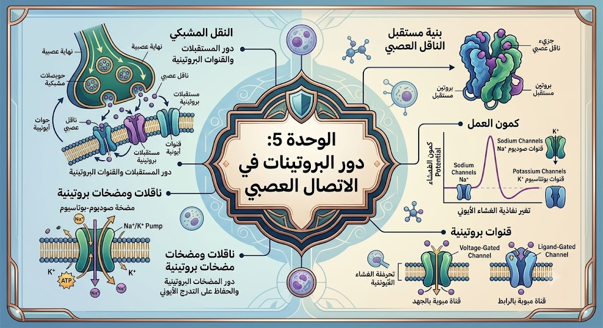

الوحدة 5: دور البروتينات في الاتصال العصبي
[ مساحة إعلانية علوية ]
1 مفهوم كمون الراحة والاستقطاب
أ. القياس الكهربائي والقطبية الغشائية:
يُقاس
كمون الراحة
بتسجيل الفرق الكهربائي بواسطة
مسريين (إلكترودين)
؛ أحدهما يوضع على السطح الخارجي للغشاء الهيولي والآخر في الداخل، حيث يسجل جهاز
الأوسيلوسكوب
فرق جهد ثابتاً يقدر بـ
-70 mV
. يعكس هذا الرقم حالة
الاستقطاب
؛ حيث يكون السطح الخارجي موجباً والداخلي سالباً، وهي الحالة الكهربائية لليفة العصبية في غياب أي تنبيه.
ب. التوزع غير المتساوي للشوارد أساس الاستقطاب:
يعود سبب ثبات كمون الراحة إلى الاختلاف في تركيز الشوارد عبر
الغشاء الهيولي
؛ حيث تتركز شوارد الصوديوم
Na⁺
بكثرة في الوسط الخارجي، بينما تتركز شوارد البوتاسيوم
K⁺
بكثرة في الوسط الداخلي (الهيولى)، وهذا التباين يخلق
تدرج تركيز
شاردي لازماً للحفاظ على ظاهرة الاستقطاب.
2 دور قنوات الميز (القنوات المفتوحة باستمرار)
أ. ما هي قنوات الميز؟
هي عبارة عن
بروتينات غشائية
توجد مفتوحة باستمرار على مستوى
الغشاء الهيولي
، وتسمح بمرور الشوارد وفق
تدرج التركيز
. كما أنها
قنوات نوعية
؛ أي أن كل قناة مخصصة لنوع معين من الشوارد.
ب. الناقلية والنفاذية الانتقائية للشوارد:
تتميز هذه القنوات بوجود تفاوت في
الناقلية
؛ حيث تكون
ناقلية شوارد البوتاسيوم
K⁺
عبر الغشاء أكبر بكثير مقارنة بناقلية شوارد الصوديوم
Na⁺
.
ج. التفسير العلمي لثبات كمون الراحة:
يؤدي هذا الاختلاف في الناقلية إلى
الخروج المستمر
لشوارد
K⁺
نحو الوسط الخارجي، وهو ما ينتج عنه جعل السطح الخارجي موجباً والداخلي سالباً، وبالتالي
ثبات كمون الراحة
عند القيمة المقررة.
3 دور مضخة صوديوم-بوتاسيوم (ATPase)
أ. تعريف المضخة وطبيعتها:
هي عبارة عن
بروتين غشائي
يتدخل لضمان استقرار
كمون الراحة
من خلال نقل الشوارد
عكس تدرج التركيز
(أي من الوسط ذو التركيز المنخفض إلى الوسط ذو التركيز المرتفع)، وهي عملية تستلزم استهلاك طاقة على شكل
ATP
.
ب. خطوات عمل المضخة:
تتم عملية النقل النشط وفق الخطوات التالية:
- ارتباط 3 شوارد Na⁺ من الوسط الداخلي بالمواقع الخاصة بها على المضخة.
- إماهة جزيئة ATP وتحرير طاقة تؤدي إلى تغيير الفراغ البنيوي للمضخة.
- إخراج الشوارد الثلاثة Na⁺ نحو الوسط الخارجي.
- ارتباط شاردتي بوتاسيوم K⁺ من الوسط الخارجي بالمضخة، ثم عودتها إلى شكلها الأصلي لإدخالهما نحو الوسط الداخلي.
ج. مساهمة المضخة في ثبات كمون الراحة:
بسبب إخراج 3 شوارد موجبة
Na⁺
وإدخال شاردتين موجبتين فقط
K⁺
في كل دورة، تحدث خسارة صافية لشحنة موجبة في الداخل (أو زيادة الإيجابية في الخارج)، مما يساهم بشكل أساسي في الحفاظ على
حالة الاستقطاب
وثبات قيمة كمون الراحة.
4 كمون العمل والقنوات الفولطية (المرتبطة بتغير الجهد)
أ. تأثير التنبيه الفعال وغير الفعال وتسجيل كمون العمل:
عند تطبيق
تنبيه غير فعال
(أقل من العتبة)، فإنه
لا يؤثر
على قيمة كمون الراحة ولا يولد كمون عمل بل يُسجل تغير طفيف يزول بسرعة. أما عند تطبيق
تنبيه فعال
(يبلغ أو يتجاوز عتبة التنبيه) على ليفة عصبية في حالة راحة، يُسجل على جهاز
الأوسيلوسكوب
تغير مفاجئ وسريع ومؤقت في كمون الغشاء يُعرف بـ
كمون العمل
، ويمر عبر مراحل متسلسلة.
ب. خصائص ودور القنوات الفولطية (المرتبطة بتغير الجهد):
تتميز هذه القنوات بكونها بروتينات غشائية
نوعية
(كل قناة مخصصة لنوع معين من الشوارد)، وتتوزع هذه القنوات
على طول الليف العصبي
. وهي تتفتح أو تنغلق استجابةً لـ
التغير في قيمة كمون الغشاء
، وتنقسم إلى نوعين أساسيين:
- قنوات Na⁺ الفولطية: مسؤولة عن تدفق الصوديوم نحو الداخل أثناء زوال الاستقطاب.
- قنوات K⁺ الفولطية: مسؤولة عن خروج البوتاسيوم نحو الخارج أثناء عودة الاستقطاب.
ج. مراحل تسجيل كمون العمل:
- 1. زوال الاستقطاب (إزالة الاستقطاب): عند بلوغ عتبة التنبيه، تنفتح بسرعة فائقة قنوات Na⁺ الفولطية، مما يسمح بدخول مكثف وسريع لشوارد Na⁺ نحو الوسط الداخلي وفق تدرج التركيز، فيتجلى ذلك بانعكاس الاستقطاب ليصبح الداخل موجباً (+30 mV) والخارج سالباً.
- 2. عودة الاستقطاب: بعد بلوغ الذروة، تنغلق قنوات Na⁺ الفولطية تلقائياً (تصبح غير منفتحة مؤقتاً)، وفي نفس الوقت تنفتح قنوات K⁺ الفولطية، مما يؤدي إلى خروج مكثف لشوارد K⁺ نحو الوسط الخارجي، فيفقد الوسط الداخلي شحناته الموجبة ويعود للقطبية السالبة.
- 3. فرط الاستقطاب (جزء من فترة الجموح): نظراً للبطء في إغلاق قنوات K⁺ الفولطية، تستمر شوارد K⁺ في الخروج لفترة إضافية، مما يجعل الوسط الداخلي سالباً أكثر من قيمة كمون الراحة (أقل من -70 mV مؤقتاً).
- 4. العودة إلى كمون الراحة: في المرحلة الأخيرة، وبعد انغلاق قنوات K⁺ الفولطية تماماً، تتدخل آليات الراحة الأساسية والمتمثلة في قنوات الميز (المفتوحة باستمرار) ومضخة الصوديوم-بوتاسيوم (ATPase) لضمان إعادة توزيع الشوارد وإرجاع كمون الغشاء بصفة نهائية إلى قيمته الأصلية وثبات كمون الراحة (-70 mV) استعداداً لتنبيه جديد.
5 الرسالة العصبية على مستوى المشابك (التبليغ المشبكي)
أ. مفهوم المشبك:
المشبك هو منطقة اتصال وظيفي بين
الخلية قبل المشبكية
(التي تحتوي على حويصلات مشبكية) و
الخلية بعد مشبكية
(التي تحتوي على مستقبلات غشائية). تفصل بينهما "الشق المشبكي" الذي لا تعبره السيالة الكهربائية، بل تتحول إلى
رسالة كيميائية
.
ب. مراحل التبليغ المشبكي:
تتم العملية وفق الخطوات الدقيقة التالية:
- وصول كمون العمل: يصل كمون العمل إلى النهاية العصبية قبل المشبكية.
- فتح قنوات الكالسيوم: يؤدي تغير الجهد إلى انفتاح قنوات الكالسيوم الفولطية، مما يسمح بدخول شوارد الكالسيوم Ca²⁺ نحو النهاية قبل المشبكية.
- هجرة الحويصلات: يؤدي دخول الكالسيوم إلى هجرة الحويصلات المشبكية نحو الغشاء قبل المشبكي، فتندمج معه وتطرح الوسيط الكيميائي العصبي (مثل الأستيل كولين) في الشق المشبكي عبر ظاهرة الإطراح الخلوي.
- تثبت الوسيط العصبي: ينتشر الوسيط العصبي في الشق المشبكي ويتثبت على مستقبلات غشائية نوعية موجودة على غشاء الخلية بعد المشبكية.
- استجابة الخلية بعد مشبكية: يؤدي تثبت الوسيط العصبي إلى انفتاح قنوات كيميائية، مما يؤدي إلى تغير في كمون غشاء الخلية بعد المشبكية (توليد كمون بعد مشبكي).
ج. مصير الوسيط العصبي (الإنهاء المشبكي):
لضمان عدم استمرار التنبيه، يتم إبطال مفعول الوسيط العصبي (مثلاً بفضل
إنزيم أستيل كولين إستراز
) الذي يفكك الأستيل كولين إلى كولين وحمض الخل، ليُعاد امتصاص الكولين وتُصنع منه جزيئات أستيل كولين جديدة، مما يضمن
زوال التنبيه
.
6 أنواع المشابك وتأثيرها (مشابك منبهة ومشابك مثبطة) ودور الكمونات البعد مشبكية
أ. المشبك المنبه وتوليد وتسجيل كمون بعد مشبكي منبه (PPSE):
يؤدي إلى
رفع احتمالية
توليد كمون عمل في الخلية بعد المشبكية عبر إحداث
كمون بعد مشبكي منبه
:
- الآلية: تثبت الوسيط العصبي المنبه على مستقبلاته النوعية يفتح قنوات كيميائية خاصة بشوارد Na⁺.
- النتيجة والدور: دخول Na⁺ يسبب زوال استقطاب موضعي ينتشر نحو المنطقة المجاورة (منطقة الاستقبال)، وإذا بلغ مجموع هذه الكمونات عتبة التنبيه، فإنه يؤدي إلى توليد كمون عمل جديد وانتقال الرسالة العصبية.
ب. المشبك المثبط وتوليد وتسجيل كمون بعد مشبكي مثبط (PPSI):
يؤدي إلى
خفض احتمالية
توليد كمون عمل عبر إحداث
كمون بعد مشبكي مثبط
:
- الآلية: تثبت الوسيط العصبي المثبط (مثل GABA) على مستقبلاته النوعية يفتح قنوات كيميائية خاصة بشوارد الكلور (Cl⁻).
- النتيجة والدور: دخول شوارد الكلور السالبة إلى الداخل يزيد من سالبية الوسط الداخلي للخلية بعد المشبكية، مما يسبب فرط استقطاب موضعي، وهذا يبعد كمون الغشاء عن عتبة التنبيه ويُبطِل أو يمنع توليد كمون العمل (تثبيط الرسالة العصبية).
7 الإدماج العصبي (الجمع الفضائي والجمع الزماني) وجمع الكمونات الموضعية
أ. مفهوم الإدماج العصبي وجمع الكمونات الموضعية:
هو العملية التي يقوم بها
العصبون المحرك
(الخلية بعد مشبكية) والتي تعتمد أساساً على
جمع الكمونات الموضعية
(أي الكمونات البعد مشبكية المنبهة
PPSE
المزيلة للاستقطاب، والكمونات البعد مشبكية المثبطة
PPSI
المفرطة للاستقطاب) الواردة إليه، ليقرر في النهاية إما
توليد كمون عمل
أو عدم توليده.
ب. الجمع الفضائي (المكاني):
- الآلية: يتميز بتنبيه عدة مشابك مختلفة في نفس الوقت وبشكل متزامن على نفس العصبون المحرك (تكون متباعدة مكانياً على الغشاء).
- النتيجة والدور: تتداخل وتجتمع هذه الكمونات الموضعية معاً في منطقة القطعة الابتدائية لليف العصبي، فإذا بلغ مجموعها عتبة التنبيه، يتم توليد كمون عمل وانتقال الرسالة العصبية، أما إذا كانت المحصلة الإجمالية أقل من عتبة التنبيه، فإنه لا يُولد كمون عمل ولا تنتقل الرسالة العصبية.
ج. الجمع الزماني:
- الآلية: يتميز بتنبيه نفس المشبك عدة مرات بتواترات متتالية وسريعة (بفارق زمني قصير جداً بين تنبيه وآخر).
- النتيجة والدور: نظراً لتقارب التنبيهات زمنياً وقبل زوال أثر الكمون الموضعي السابق، يحدث تراكم للكمونات الموضعية في منطقة القطعة الابتدائية، فإذا تجاوزت الحصيلة عتبة التنبيه، يتم توليد كمون عمل جديد، أما إذا كانت المحصلة النهائية أقل من عتبة التنبيه، فلا يُولد أي كمون عمل.
8 الإحساس بالألم، دور المسكنات (الإنكيفالين والمورفين)، ومخاطر الإدمان
أ. مسار نقل رسالة الألم في الحالة العادية (كيف نشعر بالألم؟):
- الآلية: عندما تتعرض لجرح أو ضربة، تنتشر رسالة عصبية مؤلمة عبر الأعصاب لتصل إلى النخاع الشوكي. على مستوى المشبك العصبي، تقوم النهاية العصبية للعصبون الأول (القبل مشبكي) بإطلاق وسيط عصبي كيميائي خاص بنقل الألم يُسمى المادة P (Substance P). تسبح هذه المادة في الشق المشبكي وتتثبت على مستقبلاتها الخاصة الموجودة في العصبون الموالي (البعد مشبكي).
- النتيجة والدور: هذا التثبت يولد كمونات بعد مشبكية منبهة (PPSE) تجعل الرسالة العصبية تواصل طريقها نحو الدماغ، فيقوم الدماغ بترجمتها مباشرة ونشعر بالألم.
ب. دور المسكن الطبيعي (الإنكيفالين) واستخداماته:
- الآلية: يمتلك الجسم داخلياً جزيئاً مسكناً طبيعياً تُفرزه بعض الخلايا العصبية لتقليل الألم يُدعى الإنكيفالين (Enkephalin). يتثبت الإنكيفالين بصفة مؤقتة وطبيعية على مستقبلات أفيونية غشائية نوعية متواجدة على غشاء العصبونات الناقلة للألم.
- النتيجة والدور: بمجرد ارتباطه، يثبط العصبون القبل مشبكي عبر منع دخول شوارد الكالسيوم، مما يمنع تحرير المادة P مؤقتاً لتخفيف الألم وتسكينه بشكل طبيعي دون إحداث أي ضرر.
ج. دور المورفين (المسكن الخارجي) والاستخدامات الطبية:
- الآلية: المورفين هو مادة مسكنة قوية جداً تُستخلص من نبات الخشخاش، وله بنية فراغية مشابهة تماماً للإنكيفالين، مما يجعله قادراً على الارتباط بنفس المستقبلات الأفيونية وبقوة أكبر.
- النتيجة والدور: يُستخدم طبياً لتسكين الآلام الحادة والخطيرة (مثل تسكين آلام المرضى بعد العمليات الجراحية الكبرى أو حوادث السير الخطيرة)، حيث يمنع تحرير المادة P ويقطع إرسال الألم تماماً.
د. مخاطر الاستعمال المفرط للمورفين (الإدمان وتخريب المستقبلات):
- الآلية: الاستهلاك المفرط أو غير الطبي للمورفين يجعل الدماغ يعتمد عليه كلياً ويتوقف عن إنتاج الإنكيفالين الطبيعي، كما يؤدي الارتباط الدائم والمكثف إلى تخريب وتعطيل المستقبلات الأفيونية وفقدان حساسيتها.
- النتيجة والدور: ينتج عن ذلك دخول الشخص في حالة إدمان خطير وتبعية نفسية وجسدية، حيث يصبح عاجزاً عن تحمل الألم أو العيش بدون الجرعة، وتصبح مستقبلات جهازه العصبي غير قادرة على العمل بشكل طبيعي.
9 الإدمان (التأثيرات العصبية للمخدرات وآليات الاعتماد)
أ. مفهوم الإدمان وآليته على مستوى المشابك العصبية:
- الآلية: تتداخل المواد المخدرة (مثل الكوكايين، النيكوتين، أو المورفين بجرعات مفرطة) مع نظام المكافأة في الدماغ، حيث ترتبط بمستقبلات عصبية نوعية وتتسبب في إفراز كميات هائلة ومفرطة من وسيط عصبي مسؤولة عن المتعة والشعور بالرضا يُدعى الدوبامين (Dopamine) في الشق المشبكي، مع منع إعادة امتصاصه أو تفكيكه بشكل طبيعي.
- النتيجة والدور: يؤدي هذا الفائض الكبير والمستمر من الدوبامين إلى توليد إشارات عصبية قوية جداً تترجمها المراكز العليا في الدماغ على شكل شعور مفرط بالنشوة والسعادة المؤقتة.
ب. تطور الاعتماد العضوي والنفسي (تخريب المستقبلات وانخفاض الحساسية):
- الآلية: كرد فعل دفاعي على الفيض الهائل والمتكرر للدوبامين، يستجيب الدماغ بتخفيض عدد المستقبلات الغشائية الخاصة به أو تقليل حساسيتها، كما تتوقف الخلايا عصبياً عن إنتاج وسائطها الطبيعية بصورة عادية.
- النتيجة والدور: يدخل الشخص في حالة اعتماد جسدي ونفسي (إدمان)؛ حيث يصبح غير قادر على الإحساس بالمتعة الطبيعية أو أداء نشاطاته اليومية بدون المخدر، ويحتاج دائماً إلى زيادة الجرعة للحصول على نفس التأثير (ظاهرة التحمل)، وفي حال انقطاعه تظهر عليه أعراض الانسحاب المؤلمة والخطيرة.
نصائح للتفوق في البكالوريا
خلاصة عملية لهذه الوحدة قبل الامتحان
- اربط الحدث بالقناة المسؤولةكمون الراحة: ناقلية K⁺ المستمرة ومضخة Na⁺/K⁺ المستهلكة لـ ATP. كمون العمل: فتح قنوات Na⁺ الفولطية (زوال الاستقطاب) ثم قنوات K⁺ (عودة الاستقطاب).
- رتّب مراحل منحنى الأوسيلوسكوبكمون الراحة (حوالي −70 mV) ← زوال الاستقطاب ← عودة الاستقطاب ← فرط الاستقطاب ← العودة إلى كمون الراحة. ولا ينشأ كمون عمل إذا كان التنبيه دون العتبة.
- رتّب أحداث المشبكوصول كمون العمل ← فتح قنوات Ca²⁺ ← تحرر الوسيط من الحويصلات ← ارتباطه بمستقبلات نوعية ← تغير نفاذية الغشاء بعد المشبكي ← PPSE أو PPSI ← زوال الوسيط (تفكيك أو إعادة امتصاص).⚠️ خطأ شائع: حذف دور Ca²⁺ أو إهمال المستقبل النوعي.
- حدّد موضع تأثير المخدر أو السماذكر الخطوة التي يتدخل فيها (تقليد الوسيط، منع تفكيكه أو امتصاصه، حجب المستقبل) واذكر اسم الوسيط والمستقبل ونتيجة ذلك على الخلية بعد المشبكية.
[ مساحة إعلانية سفلية ]